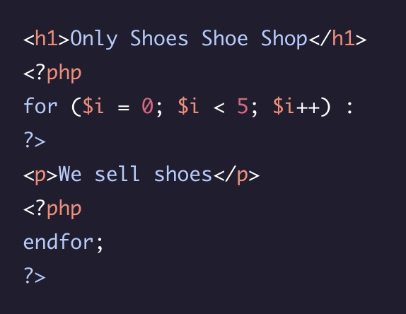
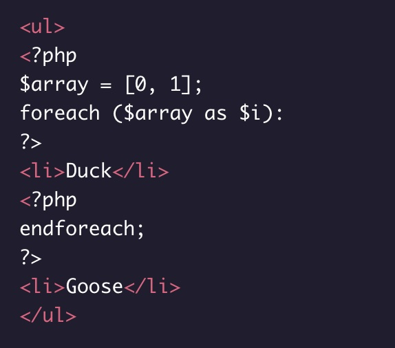
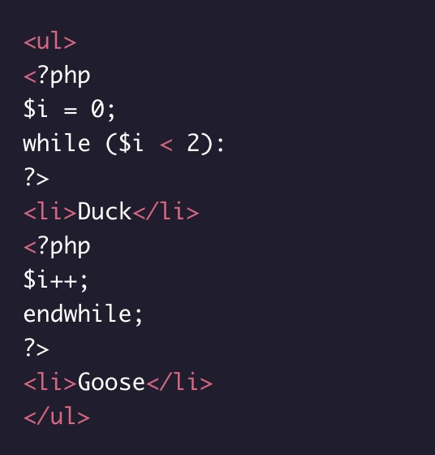
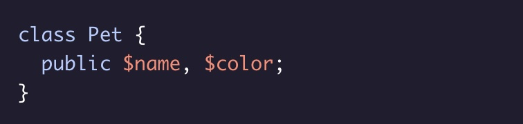
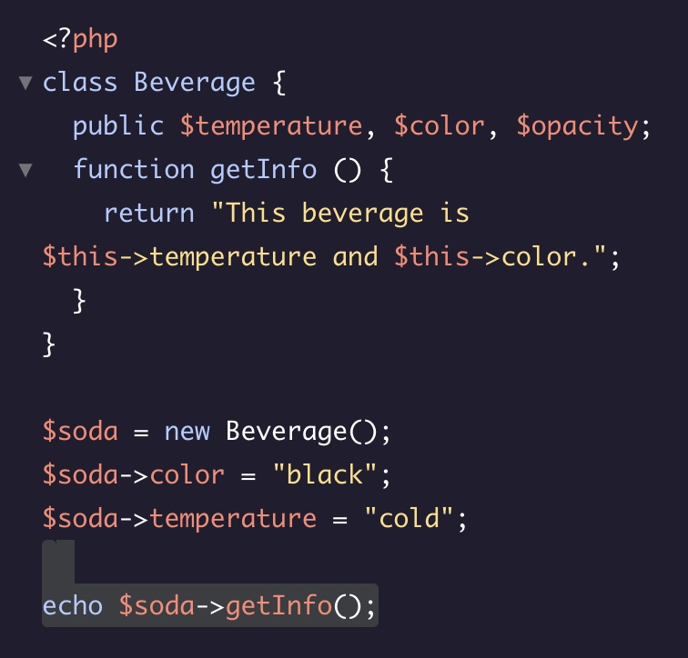
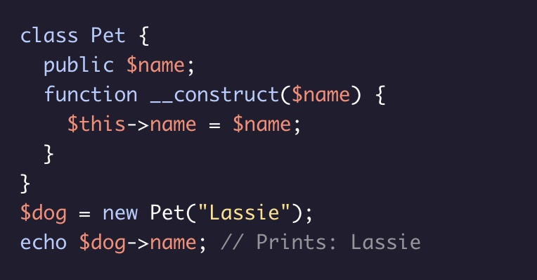
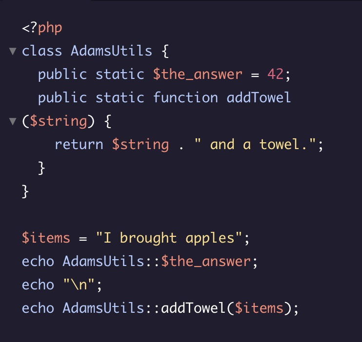
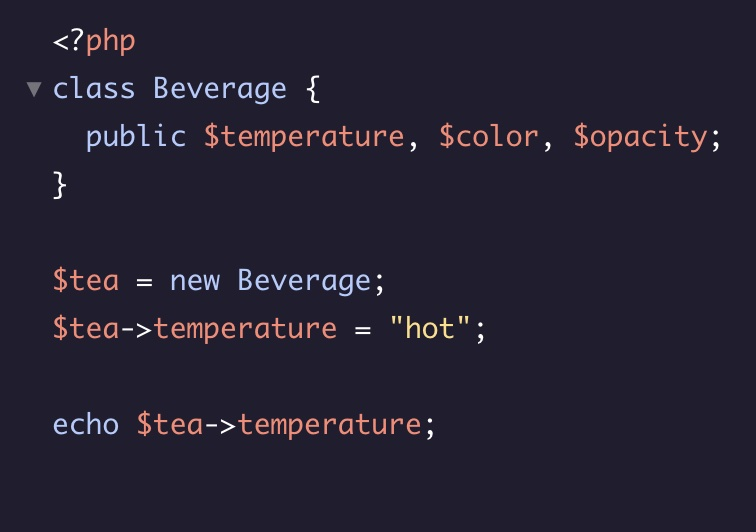

Introduction
- <?php = tag d'ouverture PHP
- ?> = tag de fermeture PHP, il n'est pas obligatoire.
- echo est un mot clé pout afficher du texte. Il faut mettre le texte à afficher entre guillemets.
- PHP n'est pas sensible à la casse.
- // ou # = commentaire.
- /* */ = commentaire multi-lignes.
- Chaque déclaration en PHP doit être terminée par un point-virgule ;
Les variables
- Les Strings (chaînes de caractère) sont des collections de texte que l'ordinateur traite comme un seul élément de données.
- Une chaîne peut être de n'importe quelle longueur et contenir des lettres, des chiffres, des symboles ou des espaces entourés de guillemets.
- Afin d'inclure certains caractères dans les chaînes de caractères, nous devons utiliser des séquences d'échappement: \.
- \n permet de faire un saut de ligne.
- Nous pouvons utiliser l'opérateur de concaténation (.) pour combiner deux chaînes de caractères en une seule.
-
On déclare une variable en utilisant le signe dollar
$ suivi du nom de la variable, puis on utilise
l'opérateur d'affectation = pour lui donner une
valeur. ex:
$name = "Core"; -
PHP dispose d'une analyse syntaxique des variables qui nous permet
d'inclure des variables directement dans nos chaînes de
caractères. On peut aussi utiliser la syntaxe suivante:
${var_name}pour insérer la variable dans une chaîne de caractères. - Une fois qu'une variable a été assignée, on peut changer sa valeur. C'est ce qu'on appelle la réaffectation.
- Nous pouvons créer un alias pour une variable, au lieu d'une simple copie, en utilisant l'opérateur d'affectation de référence =&.
-
L'opérateur d'affectation concaténateur .= est
une notation abrégée permettant de réaffecter une variable de type
chaîne à sa valeur actuelle, à laquelle est ajoutée une autre
valeur de type chaîne. Ex:
$name .= " Mathieu"
Les Nombres
- PHP possède deux types de données numériques : les entiers et les nombres à virgule flottante.
- Nous pouvons utiliser les opérateurs arithmétiques pour effectuer des opérations mathématiques:
- Les opérations ont un ordre de préséance, ce qui signifie que certains types d'opérations dans une chaîne seront évalués avant les autres : la première opération évaluée sera toute opération entourée de parenthèses (()), puis les exposants (**), puis la multiplication (*) et la division (/), et enfin l'addition (+) et la soustraction (-)
- Nous pouvons attribuer des valeurs numériques aux variables et ensuite effectuer des opérations numériques avec elles.
- Nous pouvons utiliser les opérateurs d'affectation mathématiques comme raccourci lors de la réaffectation des variables numériques :
| Operation | Symbole | Exemple | Console |
|---|---|---|---|
| Addition | + | echo 1 + 4.5; |
Prints: 5.5 |
| Soustraction | - | echo 9 - 1; |
Prints: 8 |
| Multiplication | * | echo -1.9 * 2.9; |
Prints: -5.51 |
| Division | / | echo 9 / 1; |
Prints: 9 |
| Modulo | % | echo 11 % 3; |
Prints: 2 |
| Exponentiation | ** | echo 8 ** 2; |
Prints: 64 |
| Operation | Long Syntax: | Short syntax: |
|---|---|---|
| Addition | $x = $x + $y | $x += $y |
| Soustraction | $x = $x - $y | $x -= $y |
| Multiplication | $x = $x * $y | $x *= $y |
| Division | $x = $x / $y | $x /= $y |
| Modulo | $x = $x % $y | $x %= $y |
Les fonctions
- Nous pouvons regrouper un ensemble d'instructions au sein d'une fonction nommée afin de les réutiliser quand nous le souhaitons.
- Lorsque nous invoquons une fonction, l'ordinateur exécute le corps de la fonction, spécifié par le bloc de code qui suit la liste des paramètres.
- Les fonctions peuvent renvoyer une valeur en utilisant le mot clé return, sinon elles renvoient NULL, ce qui signifie aucune valeur.
- Nous pouvons stocker la valeur de retour d'une fonction dans une variable ou l'utiliser de n'importe quelle autre manière que nous utiliserions une valeur.
- Nous pouvons définir des fonctions avec des paramètres qui sont des variables auxquelles nous pouvons nous référer tout au long du corps de notre fonction.
- Lorsque nous invoquons des fonctions, les valeurs que nous leur donnons sont appelées arguments.
- Les fonctions peuvent avoir plusieurs paramètres.
- L'ordre dans lequel les arguments sont passés détermine les paramètres auxquels ils correspondent.
- Vous pouvez rendre un argument facultatif en fournissant à son paramètre correspondant une valeur par défaut avec le signe = .
- Si vous faites précéder un paramètre du signe de référence (&), cet argument sera transmis par référence.
- Les variables des fonctions ont une portée locale et ne sont pas accessibles depuis l'extérieur de la fonction.
- Nous pouvons utiliser le mot-clé global pour utiliser les variables de la portée globale dans une fonction.

Les fonctions intégrée à PHP
- La fonction gettype() prend une variable comme argument et renvoie une valeur de type chaîne représentant le type de données de l'argument.
- La fonction var_dump() prend également un argument variable. Elle imprime les détails de l'argument qu'elle reçoit.
-
La fonction strrev() prend une chaîne de
caractères comme argument et renvoie une chaîne contenant tous les
caractères de la chaîne originale dans l'ordre inverse. Ex:
echo strrev("Hello, World!"); - La fonction strtolower() permet de transformer une chaîne d'arguments en toutes les lettres minuscules.
-
La fonction str_repeat() prend une chaîne de
caractères comme premier argument et un nombre comme second. Elle
renvoie une chaîne contenant la chaîne de l'argument répétée le
nombre de fois de l'argument. Ex:
echo str_repeat("hi", 10); // Prints: hihihihihihihihihihi -
La fonction substr_count() renvoie le nombre
d'instances d'une sous-chaîne dans une chaîne de caractères. Elle
prend deux arguments, la chaîne à rechercher - et la chaîne à
rechercher.
echo substr_count($story, "like"); // Prints: 8 - La fonction abs() renvoie la valeur absolue de son argument numérique :
- Une autre fonction utile est la fonction round() qui renvoie le nombre entier le plus proche de son argument numérique :
- La fonction rand() renvoie un nombre entier aléatoire. Si nous souhaitons avoir plus de contrôle sur le nombre aléatoire que nous générons, nous pouvons invoquer la fonction rand() avec deux arguments entiers représentant le plus petit nombre aléatoire autorisé et le plus grand nombre aléatoire autorisé.
- La fonction str_pad() remplace une chaîne de caractères par une nouvelle longueur.
- STR_PAD_BOTH
- STR_PAD_LEFT
- STR_PAD_RIGHT - comportement par défaut
- La fonction strtoupper() renvoie une chaîne en majuscules.
- La fonction ceil() arrondit au nombre supérieur
| Paramètre | Description |
|---|---|
| string | Requis. Spécifie la chaîne à compléter |
| length | Obligatoire. Spécifie la nouvelle longueur de la chaîne. Si cette valeur est inférieure à la longueur originale de la chaîne, rien ne sera fait. |
| pad_string | Facultatif. Spécifie la chaîne à utiliser pour le remplissage. La valeur par défaut est l'espace blanc. Obligatoire. Spécifie la nouvelle longueur de la chaîne. Si cette valeur est inférieure à la longueur originale de la chaîne, rien ne sera fait. |
| pad_type |
Facultatif. Indique de quel côté il faut compléter la
chaîne.
|
| Exemple | echo str_pad($str,20,"."); |
Les Tableaux
- Syntaxe:
$my_arr = array(0,1,2); -
Autre syntaxe plus courte:
$number_array = [0, 1, 2, 3]; -
Pour imprimer le contenu d'un tableau nous pouvont utiliser la
fonction intégrée print_r():
print_r($number_array); -
Si nous voulons simplement imprimer les éléments du tableau
listés, nous pouvons convertir le tableau en une chaîne de
caractères en utilisant la fonction intégrée implode(). La
fonction implode() prend deux arguments : une chaîne de caractères
à utiliser entre chaque élément (le $glue), et le tableau à
joindre (le $pieces) :
echo implode(", ", $number_array); -
On peut accéder aux éléments individuels d'un tableau en utilisant
le nom de la variable du tableau et l'indice d'emplacement entouré
de crochets ([]), par exemple :
echo $my_array[1]; -
Nous ajoutons des éléments à la fin d'un tableau en prenant le nom
de la variable et en ajoutant des crochets ([]), l'opérateur
d'affectation (=) et l'élément que nous voulons ajouter :
$string_array[] = "new element"; - La fonction array_pop() prend un tableau comme argument. Elle supprime le dernier élément d'un tableau et renvoie l'élément supprimé.
- La fonction array_push() prend un tableau comme premier argument. Les arguments qui suivent sont des éléments à ajouter à la fin du tableau. array_push() ajoute chacun des éléments au tableau et renvoie le nouveau nombre d'éléments dans le tableau.
-
La fonction array_shift() supprime le premier élément d'un tableau
et renvoie cette valeur. Chacun des éléments du tableau sera
décalé d'un indice vers le bas. Par exemple, l'élément qui se
trouvait précédemment à l'indice 3 sera maintenant situé à
l'indice 2.
Tout comme array_pop(), array_shift() réduit la longueur du tableau, et l'élément supprimé disparaît définitivement. - La fonction array_unshift() prend un tableau comme premier argument. Les arguments qui suivent sont des éléments à ajouter au début du tableau. Elle retourne le nouveau nombre d'éléments dans le tableau.
Les Tableaux associatifs
Les tableaux associatifs sont des collections de paires
clé= >valeur. La clé d'un tableau associatif doit être soit une
chaîne de caractères, soit un nombre entier. Les valeurs contenues
peuvent être de n'importe quel type. Nous utilisons l'opérateur
=> pour associer une clé à sa valeur. Ex:
$my_array = ["panda" => "very cute", "lizard" => "cute",
"cockroach" => "not very cute"];
-
Pour imprimer le contenu du tableau associatif nous pouvons
utiliser la méthodeprint_r(). Ex:
print_r($grades); - La méthode implode() n'imprime que la valeur et pas la clé.
-
Nous accédons à la valeur à des points clés donnés à l'aide de
crochets ([]) :
echo $my_array["panda"]; - Pour ajouter de nouveaux éléments à un tableau associatif, nous utilisons l'opérateur d'affectation (=) : $my_array["capybara"] = "cutest";
-
Nous pouvons supprimer entièrement une paire clé => valeur en
utilisant la fonction PHP unset() Ex
unset($nums["one"]);. Note : si la clé utilisée n'existe pas dans le tableau, alors rien ne se passe. - L'opérateur union (+) prend deux tableaux et retourne un nouveau tableau avec toutes les clés uniques du second tableau ajoutées au premier.
-
Il existe deux façons d'assigner une variable à une autre :
- Par valeur - ceci crée deux variables qui contiennent des copies de la même valeur mais restent des entités indépendantes.
-
Par référence - cela crée deux noms de variables (alias) qui
pointent vers le même espace en mémoire. Ils ne peuvent pas
être modifiés séparément ! Ex:
$alias =& $favorites;
PHP et HTML
PHP est un langage de programmation puissant utilisé pour d'autres applications que la création de modèles HTML, mais l'utilisation de PHP combinée à HTML reste une partie importante des compétences de nombreux développeurs web.
Nous pouvons intégrer des scripts PHP dans des documents HTML avec la balise d'ouverture <?php et la balise de fermeture ?> . Le processeur PHP lira l'ensemble du fichier, évaluera tout le PHP, le traduira en HTML et le transmettra au serveur Web pour qu'il soit envoyé au client.
Lorsque nous utilisons echo dans le HTML, nous n'imprimons plus dans
le terminal, mais dans le document HTML. Ex:
My favorite color is {$data['color']}.echo "
- <?= est un raccourci pour <?php echo.
- Les superglobals sont des variables globales automatiques qui sont disponibles dans tous les scopes d'un script.
Les principales superglobales
- $GLOBALS
- $_SERVER
- $_GET => contient un tableau associatif de variables passées au script actuel à l'aide de paramètres de requête dans l'URL.
- $_POST => contient un tableau associatif de variables passées au script courant à l'aide d'un formulaire soumis par la méthode "POST".
- $_FILES
- $_COOKIE
- $_SESSION
- $_REQUEST => ceci contient le contenu de $_GET, $_POST, et $_COOKIE
- $_ENV
La méthode GET
En HTML, le fait de donner la valeur "get" à l'attribut method d'un formulaire indique que vous souhaitez que le formulaire soit soumis à l'aide de la méthode GET. Lorsque cette méthode est utilisée, les entrées du formulaire sont transmises en tant que paramètres dans une chaîne d'interrogation URL.
Pour récolter les infos d'un formulaire il faut ajouter l'attribut
"name" au formulaire. Ex:
<input type="text" name="country"> L'info est
traitée sous forme de tableau.
La méthode POST
En HTML, le fait de définir l'attribut method d'un formulaire sur "post" indique que vous souhaitez que le formulaire soit soumis à l'aide de la méthode POST. Lorsque vous utilisez la méthode POST pour soumettre des formulaires, vous ne verrez pas l'URL changer. Les données du formulaire sont envoyées en utilisant les en-têtes de la requête HTTP au lieu des paramètres de l'URL.
Lorsque le formulaire est soumis, les données d'entrée sont disponibles dans la superglobale $_POST. Comme pour GET, elles sont également disponibles dans $_REQUEST.
L'attribut action
L'attribut action indique où envoyer les données du formulaire lorsqu'un formulaire est soumis.
Les Booleans et les opérateurs de comparaison
-
La déclaration if:
if(condition) {code à éxecuter};. -
La condition, ou l'expression, d'une instruction if peut contenir
une valeur booléenne (VRAI ou FAUX), une variable affectée à l'une
de ces valeurs ou une expression qui donne la valeur VRAI ou FAUX.
Ex:
1 < 10; // Evaluates to: TRUE -
L'opérateur identique (===) renvoie VRAI si
l'opérande de gauche est identique à l'opérande de droite et FAUX
si ce n'est pas le cas.
Ex :$num = 5;
$num === 5; =>True -
L'opérateur non identique (!==) renvoie VRAI si
les deux opérateurs sont différents et FAUX s'ils sont identiques
:
10 !== 10; // Evaluates to: FALSE
5 !== 10; // Evaluates to: TRUE - Il y a aussi l'opérateur == mais qui est moins strict que l'opérateur ===.
-
Il existe aussi une condition else if pour mettre
plusieurs conditions, la sytaxe est
elseif. Attentin que l'ordre de nos conditionnels est important car l'ordinateur exécutera la première condition TRUE. - Il existe aussi un switch pour comparer plusieurs expressions:
-
Un opérateur ternaire (? :) est un autre opérateur conditionnel.
Il prend trois opérandes et renvoie une valeur.
- Le premier opérande est une condition à vérifier. Elle est suivie d'un point d'interrogation ?
- Le deuxième opérande est une expression à retourner si la condition est VRAIE. Elle est suivie de deux points ( :).
- Le troisième opérande est une expression à retourner si la condition est FALSE.
Exemple:
$isClicked = FALSE;
$link_color = $isClicked ? "purple" : "blue"; -
Les expressions suivantes sont considérées comme falsy:
- Les chaînes de carctères vides
- null
- un variable indéfinie ou non déclarée
- un tableau vide
- le nombre 0
- la chaîne de carctère 0
- La fonction intégrée readline() prend une chaîne de caractères pour inviter l'utilisateur. Elle attend que l'utilisateur saisisse du texte dans le terminal et renvoie cette valeur sous forme de chaîne.

OPÉRATEURS LOGIQUES ET CONDITIONS COMPOSÉES
- En imbriquant les conditionnels les uns dans les autres, nous pouvons créer des décisions de branchement.
- L'opérateur logique || prend deux valeurs ou expressions booléennes différentes comme opérandes et renvoie une seule valeur booléenne. Il renvoie VRAI si son opérande gauche ou son opérande droit vaut VRAI.
- L'opérateur logique && renvoie VRAI uniquement si les deux opérandes sont évalués à VRAI. Il renvoie FALSE si l'un ou l'autre de ses opérandes, ou les deux, valent FALSE.
- L'opérateur logique not ! ne prend qu'un opérande droit. Il inverse la valeur booléenne de son opérande.
- L'opérateur logique exclusif ou (xor) renvoie VRAI uniquement si son opérande gauche ou son opérande droit évalue VRAI, mais pas les deux ou aucun.
- PHP propose une syntaxe alternative pour les opérateurs || et && : on peut utiliser or à la place de ||, et on peut utiliser and à la place de &&. Ces opérateurs fonctionnent de la même manière mais ont une précédence différente.
- Nous pouvons inclure le code d'un fichier dans un autre avec include , ce qui nous permet d'écrire des programmes modulaires en mode.
Les loops
- Les boucles while ne s'exécutent que tant que leur condition est évalué comme VRAI.
- Les boucles do...while s'exécutent toujours au moins une fois et continuent à s'exécuter tant que leur condition est VRAI.
-
Les boucles for contiennent 3 expressions et sont
fréquemment utilisées pour exécuter un bloc de code un nombre
spécifique de fois.
- La première expression est exécutée avant la première itération.
- La deuxième expression est évaluée avant chaque itération. Si elle est VRAIE, le bloc de code est exécuté. Sinon, la boucle se termine.
- La troisième expression est évaluée après chaque itération.
- Les boucles foreach sont utilisées pour itérer sur les éléments d'un tableau. La clé et la valeur de chaque élément sont disponibles dans le bloc de code.
- break est utilisé pour terminer l'exécution d'une boucle prématurément.
- continue est utilisé pour terminer prématurément l'exécution d'une itération de boucle et passer à l'itération suivante.
Les loops en HTML
- Le raccourci PHP pour les boucles utilise un deux-points ( : ) au lieu d'une parenthèse ({) pour ouvrir le bloc de code.
-
Ce raccourci utilise des mots-clés pour fermer le bloc de code au
lieu d'une parenthèse (}) :
- Utilisez endfor pour fermer une boucle for. 
- Utiliser endforeach pour fermer une boucle foreach. 
- Utilisez endwhile pour fermer une boucle while. 
- Le mot clé de fermeture doit être suivi d'un point-virgule ( ; ) .
-
Assurez-vous de rentrer en mode PHP en utilisant
<?phpou le raccourci echo<?=avant d'utiliser les variables PHP dans la boucle.
Les expressions régulières
- Les expressions régulières sont des séquences spéciales de caractères qui décrivent un modèle de texte à faire correspondre.
- Nous pouvons utiliser des littéraux pour faire correspondre les caractères exacts que nous désirons.
- L'alternance, en utilisant le symbole du tuyau | , nous permet de faire correspondre le texte qui précède ou qui suit le | .
- Les jeux de caractères, désignés par une paire de crochets [] , nous permettent de faire correspondre un caractère à une série de caractères.
- Les caractères génériques, représentés par le point ou le point . , correspondent à tout caractère unique (lettre, chiffre, symbole ou espace).
- Les plages nous permettent de spécifier une plage de caractères dans laquelle nous pouvons effectuer une correspondance. Exemple :
abc = [a-c]. - \w = n'importe quel caractère utilisable dans un mot (w est utilisé pour word).
- \d = [0-9] n'importe quel chiffe.
- \s = n'importe quel caractère blanc (espace, tabulation, retour-chariot, etc...).
- Les regroupements, indiqués par des parenthèses (), regroupent des parties d'une expression régulière et permettent de limiter l'alternance à une partie de l'expression régulière.
- Les quantificateurs fixes, représentés par des accolades {}, nous permettent d'indiquer la quantité exacte ou une plage de quantité d'un caractère que nous souhaitons faire correspondre.
- Les quantificateurs optionnels, indiqués par le point d'interrogation ?, nous permettent d'indiquer qu'un caractère dans une regex est optionnel, ou peut apparaître 0 fois ou 1 fois.
- L'étoile de Kleene, désignée par l'astérisque *, est un quantificateur qui correspond au caractère précédent 0 ou plusieurs fois.
- Le plus de Kleene, désigné par le +, correspond au caractère précédent une ou plusieurs fois.
- Les symboles d'ancrage ^ et le $ sont utilisés pour faire correspondre le texte au début et à la fin d'une chaîne, respectivement.
Valider un formulaire
- L'exécution de validations de formulaires en arrière-plan sur les données soumises est une étape essentielle pour protéger notre site web et ses utilisateurs.
- L'utilisation de l'attribut de méthode POST dans un formulaire HTML permet à notre script PHP d'accéder aux données soumises dans le tableau associatif superglobal : $_POST.
- Nous modifions notre HTML et notre PHP de manière à ce que, lorsque la saisie est jugée non valide, un retour d'information significatif soit affiché à l'utilisateur.
- Si nous prévoyons d'afficher les entrées de l'utilisateur, nous devons d'abord les assainir. Nous pouvons utiliser des méthodes comme trim() et htmlspecialchars() pour une désinfection de base.
- Nous pouvons utiliser filter_var() avec un filtre pour nettoyer les types d'entrée courants.
- Nous pouvons également utiliser filter_var() avec un filtre pour effectuer des validations sur des types d'entrée courants.
- Nous voudrons souvent effectuer des validations personnalisées.
- La fonction preg_match() vérifie si une chaîne de caractères donnée correspond à une expression régulière.
- Comme les comparaisons d'expressions régulières peuvent consommer beaucoup de puissance de calcul, nous voudrons vérifier la longueur des entrées avant d'effectuer des vérifications d'expressions régulières.
- Il est courant d'effectuer des validations en comparant les données entrées par l'utilisateur à des données en back-end.
- Avant de stocker les données de l'utilisateur dans notre back-end, nous les aseptisons pour des raisons de sécurité et de cohérence du formatage.
- Si la soumission d'un formulaire par un utilisateur a été acceptée, nous pouvons le rediriger vers une autre page avec la fonction intégrée header(). Ex:
header("Location: success.html");
Les classes et les objects
- Les classes sont définies à l'aide du mot-clé class . 
- Les fonctions définies dans une classe deviennent des méthodes et les variables de la classe sont considérées comme des propriétés. 
- Une méthode constructeur est l'une des nombreuses méthodes magiques fournies par PHP. Cette méthode est automatiquement appelée lorsqu'un objet est instancié. Une méthode constructeur est définie avec le nom de méthode spécial __construct. 
- Il existe trois niveaux de visibilité pour les membres du groupe :
- public (par défaut) - accessible depuis l'extérieur de la classe
- protected - uniquement accessible au sein de la classe ou de ses descendants
- private - uniquement accessible au sein de la classe de définition.
- Les membres peuvent être définis comme étant statiques. static. Les membres statiques sont accessibles en utilisant l'opérateur de résolution d'étendue
::. ∑

- Les classes sont instanciées en objets à l'aide du mot-clé new.
- On accède aux membres d'un objet en utilisant l'opérateur d'objet ->. 